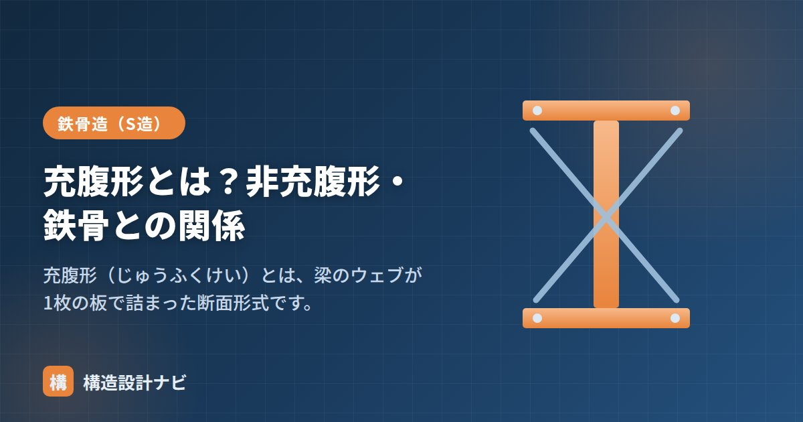

充腹形とは？非充腹形・鉄骨との関係

充腹形（じゅうふくけい）とは、梁などのウェブ（腹板）が1枚の板で詰まっている（充実している）断面形式のことです。H形鋼やI形鋼の梁が代表で、建物に使われる鉄骨梁の多くはこの充腹形です。対になる用語が、ウェブ部分を斜材などの部材で組み立てる非充腹形（トラス梁・ラチス梁）で、建築士試験や鉄骨造の教科書でセットで出てくる基本用語です。
- 充腹形＝ウェブが板で詰まった形式。H形鋼・I形鋼・プレートガーダーが代表。
- 非充腹形＝ウェブを斜材・束で構成した形式。トラス梁・ラチス梁が代表。
- 一般の柱・梁は充腹形、体育館など大スパンの屋根は非充腹形が選ばれやすい。
充腹形の意味
梁の断面は、上下のフランジと、その間をつなぐウェブ（腹板）からなります。このウェブが1枚の板で隙間なく詰まっているものが充腹形です。「腹（ウェブ）が充実している」という意味で、「じゅうふくがた」と読まれることもあります。
曲げを受ける梁では、フランジが主に曲げモーメントを、ウェブが主にせん断力を負担します。充腹形はこのせん断力を連続した板で受け持つため、力の流れが単純で、応力計算も断面全体を一体の断面として扱えるのが特徴です。フランジとウェブの役割分担は「H形鋼のフランジとウェブ」で詳しく解説しています。
非充腹形との違い
これに対し、ウェブの部分を1枚板ではなく斜材や束（つか）などの部材で構成したものを非充腹形といいます。トラス梁・ラチス梁がこれにあたります。ウェブに相当する部分が「開いている」ため、同じ梁せいなら充腹形より大幅に軽くできます。
| 充腹形 | 非充腹形 | |
|---|---|---|
| ウェブ | 板で詰まっている | 斜材・束で構成（開いている） |
| 代表例 | H形鋼梁・I形鋼梁・プレートガーダー | トラス梁・ラチス梁・ラチス柱 |
| 長所 | 製作が容易・コンパクト | 軽量で大スパンに有利・配管を通せる |
| 短所 | 大スパンでは重くなりがち | 部材数・接合が多い |
力学的に見ると、非充腹形では充腹形のウェブが受け持つせん断力を、斜材の軸力（引張・圧縮）に置き換えて伝えています。部材それぞれは軸力だけを負担するので細い材で済み、これが「軽くて大スパン向き」という長所につながります。
鉄骨との関係・使い分け
一般的な鉄骨の柱・梁は充腹形（H形鋼・角形鋼管など）です。一方、体育館・工場・大スパンの屋根などでは、軽くできる非充腹形（トラス・ラチス）が選ばれます。目安として、事務所ビルの梁スパン（6〜12m程度）ならH形鋼の充腹梁で十分経済的ですが、スパンが20〜30mを超えるような屋根では、充腹梁は自重が大きくなりすぎるため、トラスや立体トラスが有利になります。
なお「充腹でない（非充腹）」材は、ウェブ方向にあたる軸まわりの曲げを、斜材のトラス作用で負担している、と捉えると違いが理解しやすくなります。
設計上の注意点
充腹形の梁でも、せいが大きくウェブが薄いプレートガーダーではウェブの座屈（せん断座屈）が問題になり、スチフナ（補剛材）で補強します。また非充腹形は、斜材や弦材の接合部の設計・施工の手間が多く、部材ごとの座屈の検討も必要です。「軽い＝常に有利」ではありません。
設備配管との取り合いも実務では重要です。充腹形の梁を配管が貫通する場合はウェブに貫通孔をあけて補強が必要になりますが、非充腹形は斜材の間を配管が通せるため、天井ふところを節約できる利点があります。
非充腹形のトラス屋根を検査に行くと、いつも見るのは弦材どうしの接合部の施工精度です。部材数が多い分だけ製作誤差が積み重なりやすく、現場合わせのシム調整が必要になる場面は教科書には出てきません。
充腹形と非充腹形（図解）
なぜ「抜いてよい」のかというと、ウェブが負担しているのは主にせん断力だからです。せん断力は斜め方向の圧縮と引張に分解できるため、その方向に斜材を入れれば、板がなくても力は伝わります。トラス梁の斜材は、まさにこの「せん断力の通り道」だけを部材で置き換えたものです。
どちらを選ぶか
| 条件 | 向いている形式 | 理由 |
|---|---|---|
| スパン10m程度まで | 充腹形 | H形鋼1本で成立し、製作費が圧倒的に安い |
| スパン20m以上 | 非充腹形 | 充腹形では自重が増えすぎて不経済になる |
| 階高を抑えたい | 充腹形 | 非充腹形は同じ性能でもせいが大きくなる |
| 設備配管を梁に通したい | 非充腹形 | 斜材のすきまをそのまま配管ルートに使える |
| 意匠として見せたい | 非充腹形 | 体育館・駅舎など、架構を見せる空間で採用例が多い |
| 耐火被覆が必要 | 充腹形 | 非充腹形は部材数が多く、被覆の面積と手間が増える |
H形鋼のウェブを六角形の波線で切断し、ずらして溶接し直すと、せいが1.5倍でウェブに穴が並んだハニカム梁（ビーム）ができます。材料を足さずにせいを大きくできるため、充腹形の手軽さと非充腹形の軽さを両立できます。穴の位置に設備配管を通せる利点もありますが、せん断力が大きい支点付近では穴周りの応力集中に注意が必要です。
よくある質問
Q1. 充腹形と非充腹形はどちらが強いのですか？
同じせい・同じ重量で比べれば、非充腹形（トラス梁）のほうが曲げに対して有利です。材料を上下の弦材に集中させられるためです。ただし充腹形はせん断に強く、変形も小さく、製作も単純です。「強い／弱い」ではなくスパンと条件で使い分けます。
Q2. H形鋼は充腹形ですか、非充腹形ですか？
充腹形です。ウェブ（腹板）が1枚の板で詰まっているためこう呼びます。逆に、ウェブ部分を斜材や格子で組み立てたトラス梁・ラチス梁が非充腹形です。
Q3. ウェブに配管用の孔をあけたら非充腹形になりますか？
なりません。孔をあけても構造の考え方は充腹形のままで、孔の周囲の応力集中を検討したうえで補強リングを入れて対応します。非充腹形は最初から斜材で力を伝える設計になっている点が根本的に違います。
まとめ
- 充腹形はウェブが板で詰まった形式。H形鋼・I形鋼の梁が代表。
- 非充腹形はウェブを斜材・束で構成した形式。トラス梁・ラチス梁。
- 充腹形はせん断力を板で、非充腹形は斜材の軸力で伝える。
- 一般の鉄骨は充腹形、大スパンの屋根などは非充腹形が選ばれる。